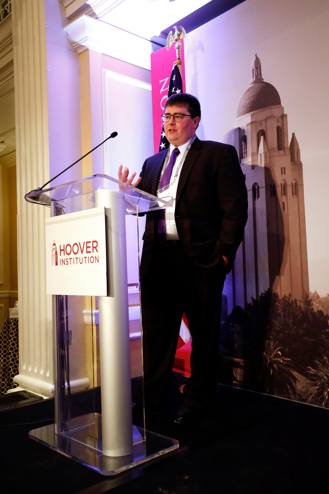

About Me

At the Hoover Institution 2020 Overseers Meeting and before the covid man bun
Contact
Education
- Ph.D. Electrical Engineering, Stanford Univeristy, 2016 - 2021
- Advisor: Anthony R. Kovscek, Department of Energy Resources Engineering
- Thesis title: Data-driven methods for laboratory-scale study of enhanced oil recovery
- M.S. Electrical Engineering, Stanford University, 2017 - 2021
- M.S. ICME, Stanford University, 2015 - 2017
- B.S. Electrical Engineering, Stanford University, 2012 - 2016
Work Experience
- Facebook Research Scientist, Central Integrity - Inauthentic Behavior, Sep. 2021 - Present
- Developed machine learning models and systems for detecting influence operations and other inauthentic behavior
- University of Wisconsin-Madison Postdoctoral Affiliate, Sep. 2021 - Present
- Applied computer vision and deep learning models to predict surface-to-bedrock depth from aerial lidar data
- Advisor: Christopher Zahasky, Department of Geosciences
- Facebook SWE Intern, AI Systems and Infrastructure, June 2020 - Sep. 2020
- Researched deep generative models for generating recommendation system datasets
- Intel SWE Intern, AI and Autonomous Solutions Group, June 2017 - Dec. 2017
- Researched applications of higher-dimensional algebraic systems to distributed training of vision models
Teaching Experience
- Accelerated Calculus for Engineers, Stanford Engineering Diversity Programs
- Program Coordinator Fall 2018 – June 2019
- Administered the Accelerated Calculus for Engineers Program, a supplementary instruction program with enrollments exceeding 200 students per quarter. Responsibilities include designing policies and procedures for the program, managing a large teaching staff, and processing student inquiries and enrollment.
- Course Assistant
- MATH 53: Ordinary Differential Equations, Spring 2019
- CME 102: Ordinary Differential Equations for Engineers, Sp15 - Sp16, F17 - W18
- CME 100: Vector Calculus for Engineers, Spring 2017
- Tutor
- EE 102A: Signal Processing and Linear Systems I, Winter 2017
- CME 102: Ordinary Differential Equations for Engineers, Winter 2015 – Spring 2019
- CME 100: Vector Calculus for Engineers, Spring 2014 – Spring 2019
- Teaching Assistant
- CME 102: Ordinary Differential Equations for Engineers, Winter 2015 - Spring 2016
- CME 108: Introduction to Scientific Computing, Summer 2015
- Prison University Project Instructor, Fall 2018
- Taught introductory algebra at San Quentin Prison. The Prison University Project, now known as Mount Tamalpais College, is a nonprofit organization which provides college courses inside San Quentin Prison to provide inmates with the opportunity to earn an associate’s degree while incarcerated.
Honors and Awards
- Fellowships
- Siebel Scholar in Energy Sciences, Class of 2020
- National GEM Consortium Ph.D. Engineering Fellow
- Stanford Enhancing Diversity in Graduate Education (EDGE) Fellow
- Awards
- Society of Petroleum Engineers International Student Paper Contest First Runner-up, September 2021
- Society of Petroleum Engineers Student Paper Contest Regional Winner, April 2021
- Hoover Institution Summer Policy Bootcamp Director’s Award, February 2020
- NSF Graduate Research Fellowship Program Honorable Mention, March 2017
- Academy of Educational Leadership Distinguished Research Award, October 2016
- Society of Petroleum Engineers International Student Paper Contest Runner-up, September 2016
- Stanford Centennial TA in Engineering, May 2016
- Society of Petroleum Engineers Student Paper Contest Regional Winner, May 2016
- NSF Graduate Research Fellowship Program Honorable Mention, April 2016
- Society of Petroleum Engineers International Student Paper Contest Runner-up, October 2014
- Society of Petroleum Engineers Student Paper Contest Regional Winner, March 2014